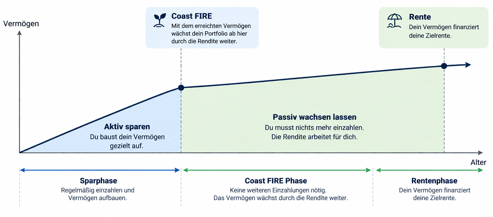

Finanztaler · FIRE Bewegung
Finanzielle Freiheit & Coast FIRE
Wähle zuerst, welches Ziel du berechnen möchtest.
Wie viel musst du bis zu deinem Coast-FIRE-Alter ansparen, damit dein Vermögen danach ohne weitere Einzahlungen bis zur Rente wachsen kann? Berechne dein Zielkapital, deine Sparrate und deine persönliche Zeitachse.

Coast FIRE bedeutet: Ab deinem Coast-FIRE-Alter sind für das langfristige Rentenziel rechnerisch keine weiteren Einzahlungen nötig. Deine laufenden Lebenshaltungskosten musst du bis zum Rentenbeginn weiterhin decken.
Deine Angaben
Zeitplan
Jahre
Jahre
Jahre
Jahre
Zielalter: 92 JahreDeine Rente (heutige Kaufkraft)
Die geschätzte Rente (800 €) wird wie deine Zielrente mit der Inflation bis zum Rentenbeginn hochgerechnet. So bleibt die Rentenlücke vergleichbar.
€ / Mo.
€ / Mo.
Netto-SchätzwertKapital & Annahmen
€
% p. a.
% p. a.
% p. a.
Vereinfachte Startentnahmerate, kein garantierter Kapitalerhalt.Dein Ergebnis
Benötigtes Vermögen mit 40 Jahren (Coast FIRE)
–Ab dann wächst das Kapital rechnerisch ohne weitere Einzahlungen.Notwendige monatliche Sparrate bis Coast FIRE
–Benötigtes Vermögen zum Rentenbeginn
–Rentenlücke heute
–Pro Monat, heutige KaufkraftRentenlücke zum Rentenbeginn
–Pro Monat, nominalPassives Wachstum von Coast FIRE bis zur Rente
––Deine Berechnung erscheint hier. Alle Angaben sind Modellwerte, keine garantierten Renditen.
Dein Vermögensverlauf
Aktiv sparenCoast FIRE: nur RenditeRentenphase (Entnahmen)
Jährliche Entwicklung bis zum Zielalter
| Alter | Phase | Vermögen nominal | Heutige Kaufkraft |
|---|
So rechnet der Rechner: Die Zielrente und die vorhandene Rente werden als heutige Kaufkraft eingegeben. Ihre Differenz wird bis zum Rentenbeginn mit Inflation hochgerechnet. Das notwendige Rentenkapital ergibt sich vereinfacht aus der jährlichen Rentenlücke geteilt durch die Entnahmerate. Dieses Kapital wird mit der angenommenen Rendite auf das Coast-FIRE-Alter zurückgerechnet. Die monatliche Sparrate berücksichtigt dein Startkapital und monatliche Einzahlungen bis Coast FIRE. Rendite und Inflation werden als konstante Modellannahmen behandelt; Steuern, Gebühren, Rentenbesteuerung, Krankenversicherung und Renditeschwankungen sind nicht separat modelliert. Die Entnahmerate ist eine Planungsheuristik, keine Garantie, dass das Kapital bis zum Zielalter reicht. Die dargestellte Rentenphase simuliert jährliche, inflationsangepasste Entnahmen und kann deshalb von der Kapitalerhalt-Annahme abweichen.
💰 Finanzielle Freiheit berechnen
Dein finanzielles Ziel
€
Der Betrag wird bei aktivierter Inflation bis zum Wunschalter hochgerechnet.Deine Planung
%
%
%
Jahre
Jahre
%
Jahre
Zielalter: 92 Jahre42 Jahre
€
Benötigtes Kapital zum Wunschalter
–Monatliche Sparrate
–Monatlicher Wunschbetrag zum Zielzeitpunkt
–Entnahme bis zum Zielalter
–Modellrechnung: Bei Kapitalerhalt wird das Zielvermögen anhand der Entnahmerate bestimmt. Bei Kapitalverzehr wird die Entnahme über die angegebene Dauer mit der Rendite in der Entnahmephase modelliert. Die Steuerberechnung ist vereinfacht: Sie berücksichtigt keine Teilfreistellung, Freibeträge, Verlustverrechnung oder die tatsächliche steuerliche Behandlung einzelner Verkäufe. Eine konstante Rendite ist nicht garantiert.